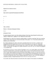

Brandon's Family Tree
Description
| Type | Value |
|---|---|
| Title | Buchanan Ancestry |
| Author | Maurice G. Buchanan |
| Date | 1962 |
Entries assigned to this source
| Persons |
|---|
 Maurice G. Buchanan Maurice G. Buchanan |
| Anselan Buey O’Kyan |
Media

Buchanan Ancestry by Maurice G. Buchanan (text from book)
Notes
| -- ChatGPT summary -- The text from the link is about the Buchanan family history, traced by Maurice G. Buchanan. It outlines the lineage from Irish kings and the transition of the family to Scotland, emphasizing the noble heritage and significant contributions of the Buchanan clan throughout history. The author, a descendant, compiles this history to aid future generations in understanding their ancestry. The narrative details the challenges and achievements of the Buchanan ancestors, highlighting their impact on history. |
| -- ChatGPT summary -- The document titled "Buchanan Ancestry" is a detailed genealogical and historical account that traces the Buchanan family lineage, starting from the early origins in Scotland and Ireland, and leading up to the family's settlement and prominence in the United States. The document begins by introducing the Buchanan family as one of noble standing, deeply integrated into the history and development of nations. The text highlights the significant contributions and stories of various family members, including those who have held positions of influence and served in critical roles within society. The narrative provides a deep dive into the family's roots, starting from Anselan O’Kyan, an early ancestor, and progressing through the lineage, detailing the lives and achievements of successive generations. The text delves into the historical context surrounding the family members, their migrations, and how they established themselves in new lands, particularly focusing on the migration patterns from Scotland and Ireland to the United States. Notable highlights include the in-depth exploration of the family's involvement in religious, social, and military spheres, showing a tradition of service and leadership. The document also covers the impact of the Buchanans in various regions, particularly in Virginia and Pennsylvania, and notes their contributions to American history, including the story of James Buchanan, the 15th President of the United States. The narrative is rich with details of personal achievements, contributions to community and nation, and the Buchanan family's influence over several centuries. It reflects on the profound sense of identity and heritage maintained by the descendants and underscores the significant impact of the family in shaping historical and societal developments. |
| --ChatGPT summary -- "Buchanan Ancestry" by Maurice G. Buchanan is a comprehensive work that explores the lineage and history of the Buchanan family. The book starts with the historical origins of the family name, believed to originate from Buchanan, Stirlingshire in Scotland. It extensively documents the genealogical records of the Buchanan lineage, providing detailed family trees and biographical sketches of notable individuals. The narrative delves into the personal stories, achievements, and struggles of various family members, offering a glimpse into their lives. Maurice G. Buchanan supports his research with historical documents, letters, and primary sources, enhancing the book's authenticity. Additionally, the inclusion of photographs, illustrations, and maps adds a visual dimension to the family's history, making it more engaging and informative. |
| First read by Brandon on March 23, 2024; it starts in talking about Aneselan Buey O’ Chan at the first of the line and goes on from there; the first two thirds of the book contain ancestry relating to lines from Scotland and Ireland; there are many mentions of President James Buchanan; the last third of the book contain sermons written or preached by the author |